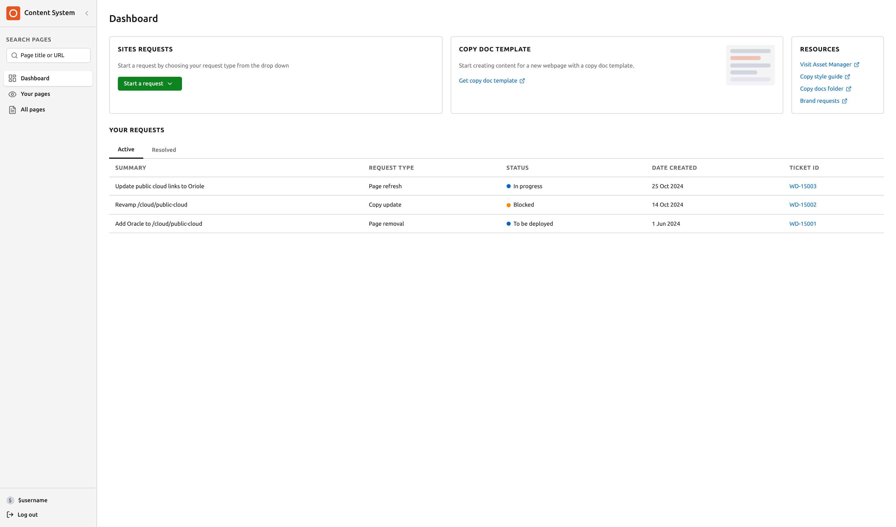
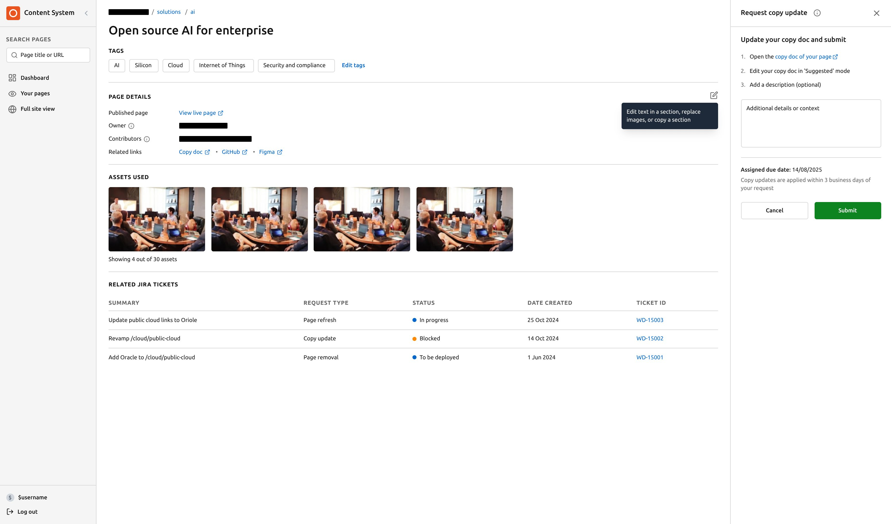
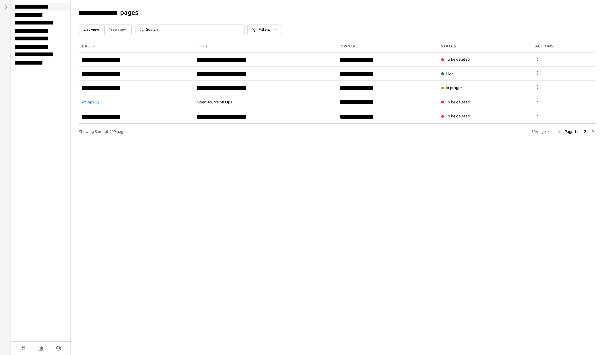
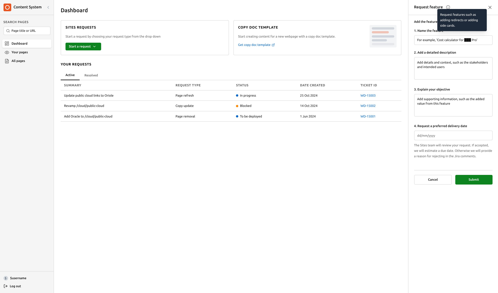

Canonical needed an internal content management system for content specialists, product managers, and marketing managers to manage workflows across the company. The project was struggling. Features were being designed screen by screen without any cohesive vision for how they'd work together. The engineering manager was pushing hard on timelines. The design team didn't have systems-level thinking guiding the work. The marketing and content teams' needs weren't being represented. Nobody could agree on a direction.
I was brought in to help and ended up leading the design from the front.
I coordinated across four groups: the design team, Sites engineers, product managers handling Jira integrations, and content teams whose day-to-day workflows the product needed to support. I ran benchmarking research, used AI to rapidly explore layout concepts, facilitated alignment sessions, sketched and reviewed designs with the junior designer, and created the delivery plan that gave the engineering manager what they needed to move forward.
This was the first month of what became a four month plus design process. My contribution was creating the foundation that made the rest of the work possible.
I couldn't run full user research in the time available so I worked with what existed. I researched CMS platforms and internal tools to understand common patterns. I used AI to rapidly explore layout possibilities. I coordinated directly with the marketing and communications team to understand their actual workflows rather than assuming. I held working sessions with designers, engineers, and the head of content to pressure-test ideas and build alignment before committing to screens.
The key insight: the team needed spatial consistency they could rely on, not a different layout for every feature.
Rather than designing individual screens for each feature, I designed a convertible task bar that transforms into a task panel based on user need. This single flexible element could handle multiple kinds of workflows without requiring a new layout pattern each time. It became the foundation for the entire product.
From this one element I designed 3 core screens that could be replicated and adapted across the whole product. This meant the engineering team had a predictable framework to build from, future features wouldn't require custom design work each time, and the product would feel consistent to the 40+ people using it across different teams.




- Screen by screen design with no unifying vision
- Engineering pushing for delivery with nothing to deliver
- Design, content, and marketing teams not aligned
- Project stalled
- Flexible skeleton framework built around one core design decision
- 3 core screens that could scale across the whole product
- Design and engineering leads both signed off
- MVP completed, project now at strategic planning stage
I prioritized spatial consistency and future-proofing over shipping individual features quickly. The convertible task bar meant developers could build it once and reuse it. It meant designers didn't need to reinvent layouts for every new capability. And it meant users would have a consistent mental model no matter which part of the product they were in.
I also made sure to represent the content and marketing teams throughout, since they were the primary users and their needs had been an afterthought up to that point.
- Got sign-off from both design and engineering leads
- Manager gave unsolicited positive feedback on how I moved the project forward
- Coordinated across design, engineering, product management, and content teams